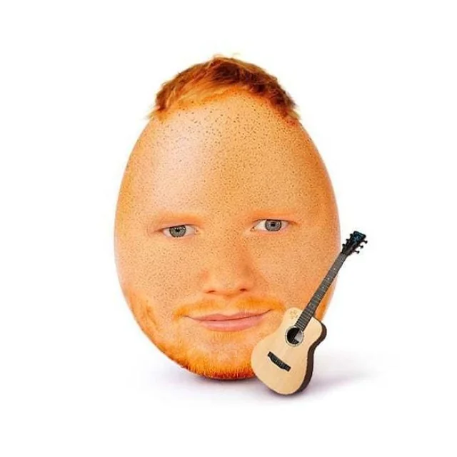
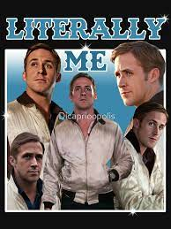

Apenas vrdd
Eduuu bin xin ling, a verdade é apenas uma só, eduuu bin xin ling gorvenará a terra usando seu caldo grosso, Você me faz acreditar que nada existe sem amor, que você veio para mostrar o meu caminho. Você traz uma paixão que eu nunca pude descobrir. Mostrou que um coração não vive sem carinho, uma vez elon musk disse: eu quero é go ,diga space-x mas sem o spa.Você veio de repente apareceu em minha vida trouxe cores para meu viver e uma sensação nunca sentida. Sou grato a você,por tudo que sentir menina da voz bela Com você quero seguir, Mas oque é o amor ? Será apenas uma palavra ? Não, não o amor é o desejo de estar junto. O amor é querer fazer o bem, de certo. O amor é quando você acaba de ver a pessoa amada, e já enche o peito de saudades. O amor é a base de todos os nossos sonhos. Eu, você, todos nós fomos feitos por amor e para amar. Ah o amor, o amor é feito de uma perfeita mistura de singelos sentimentos. Mas não se engane, o amor não é um sentimento. O amor é a transcedência.
